Ölç. İzle.Kontrol et.
Hydra Ctrl, deponuza takılan akıllı bir IoT cihazı ve ona bağlı bir uygulamadır. Su seviyesi, sıcaklık, nem, alev ve hareketi milisaniyeler içinde ölçer; sınır aşıldığında telefonunuza şifreli bildirim gönderir.
iOS sürümü hazırlanıyor.
Deponuz artık cebinizde.
Deponun içinde ne kadar su olduğunu görmek için çatıya ya da mekanik odaya çıkmanız gerekmez. Bütün ölçümler tek ekranda, nerede olursanız olun.
Seviye ve litre
Ultrasonik sensör depodaki su yüksekliğini ölçer; uygulama bunu deponuzun ölçülerine göre yüzdeye ve litreye çevirir.
Sıcaklık ve nem
Su sıcaklığı, ortam sıcaklığı ve bağıl nem ayrı ayrı ölçülür.
Geçmiş grafikleri
Seviye ve sıcaklığın zaman içindeki değişimini grafiklerle izleyin, tüketiminizi görün.
Bakım hatırlatması
Deponun bir sonraki bakımına kaç gün kaldığı ekranda görünür, zamanı gelince hatırlatılır.
Birden fazla depo
Evinizdeki, iş yerinizdeki ya da sitenizdeki bütün depoları tek hesaptan takip edin.
Garanti ve destek
Depo bilgileri, garanti şartları, sık sorulan sorular ve kullanım videoları uygulamanın içinde.
Bir şey olursa ilk siz bilin.
Cihaz ölçümleri sunucuya gönderir; bir eşik aşıldığında uygulama telefonunuza bildirim düşer. Hangi uyarıları alacağınızı uygulamanın Ayarlar bölümünden seçersiniz.
Alev algılandı
ANINDAAlev sensörü ateş gördüğü an cihaz sesli alarm verir, uygulama da kritik bildirim gönderir.
Hareket algılandı
ANINDADepo çevresinde ya da mekanik odada hareket olduğunda haberiniz olur.
Taşma
SEVİYEDepo dolmak üzereyken uyarır; flatör arızası gibi durumları erkenden fark edersiniz.
Boşalma
SEVİYESu seviyesi düştüğünde bildirir; susuz kalmadan önlem alırsınız.
Donma riski
≤ 4 °CSu sıcaklığı 4 °C'ye inince haber verir, 1 °C'nin altında "Su donmak üzere" diye kritik uyarı gönderir.
Bakteri riski
> 25 °C · 2 saSu 2 saatten uzun süre 25 °C'nin üzerinde kalırsa uyarır. Bu aralık Legionella gibi bakterilerin çoğalmasına uygundur.
Terleme ve korozyon
ÇİĞ NOKTASIOrtam sıcaklığı ve nemden çiğ noktasını hesaplar. Su bu noktaya kadar soğuksa depo yüzeyi terler; uzun sürerse küf ve korozyon başlar.
Bakım zamanı
TAKVİMDepo temizliği ve dezenfeksiyon zamanı geldiğinde hatırlatır.
Hydra Ctrl bir bilgilendirme sistemidir; hırsız alarmı, yangın söndürme ya da dondan koruma sisteminin yerine geçmez. Bildirimlerin ulaşması internet bağlantısına ve telefon ayarlarına bağlıdır.

Merkez Depo sensörü alev görüyor. Hemen kontrol edin.
Merkez Depo %97 seviyesine ulaştı.
Merkez Depo çevresinde hareket var.
Üç adımda kurulum.
Cihazın deponuza fiziksel entegrasyonundan sonra, ağı akıllı telefonunuzla saniyeler içinde kurarsınız.
Fiziksel Montaj
ESP32 röle ve sensör panelleri deponuza güvenle monte edilir. Benzersiz sistem şifreniz oluşturulur.
Bluetooth/Wi-Fi Eşleşmesi
Mobil uygulamayı açın, BLE (Bluetooth Low Energy) ile cihazı bulun ve 2.4 GHz Wi-Fi ağınıza şifreli bağlayın.
QR Aktivasyonu
Depo etiketindeki kriptolanmış QR kodu okutarak mülkiyeti üstünüze alın. Canlı veri akışı başlar.
Kurulumu adım adım izleyin
Kullanım ve kurulum videoları YouTube'da.
Sık sorulan sorular.
Aradığınızı bulamazsanız bize yazın, yardımcı olalım.
Hydra Ctrl'ü kullanmak için ne gerekiyor?
Deponuza takılı bir Hydra Ctrl cihazı, cihazın bağlanacağı 2,4 GHz bir WiFi ağı ve Kolleksan'ın sizin için açtığı müşteri hesabı. Uygulama ücretsizdir.
Mevcut depoma takılabilir mi?
Hydra Ctrl Kolleksan su depoları için geliştirildi. Deponuzun uygun olup olmadığını öğrenmek için teklif formundan bize ulaşın.
Modemimi ya da WiFi şifremi değiştirdim, ne yapmalıyım?
Uygulamada Ayarlar > Cihaz > WiFi bağlantısı ekranından yeni ağı tanıtın. Cihaz ekranında "WiFi kurulum modu" yazmıyorsa cihazdaki kurulum tuşuna 5 saniye basılı tutun.
"Su sıcaklığı yüksek" uyarısı suda bakteri var demek mi?
Hayır. Sistem suyun sıcaklığını ölçer, bakteri ölçmez. Uyarı, suyun bakterilerin çoğalmasına uygun sıcaklıkta uzun süre kaldığını söyler. Deponun gölgelenmesi ve düzenli temizlenmesi önerilir; suyun içilebilirliği ancak laboratuvar analiziyle belirlenir.
Alev alarmı çaldı, ne yapmalıyım?
Önce güvenliğinizi sağlayın ve depo çevresini kontrol edin; gerçek bir yangın varsa hemen 112'yi arayın. Cihazın sesini kurulum tuşuna kısaca basarak susturabilirsiniz; alev sürdükçe uygulamadaki uyarı devam eder.
Birden fazla depomu aynı hesaptan izleyebilir miyim?
Evet. Her deponun etiketindeki QR kodu "Depolarım" ekranından okutarak hesabınıza ekleyebilirsiniz.
Elektrik ya da internet kesilirse ne olur?
Cihaz ölçüm gönderemez ve uygulamadaki değerler güncellenmez. Bağlantı geri geldiğinde cihaz kendiliğinden yeniden bağlanır ve ölçüm göndermeye devam eder.
Deponuzu akıllı hale getirin.
Depo sayınızı ve nerede kullanacağınızı yazın, size uygun teklifle dönelim.